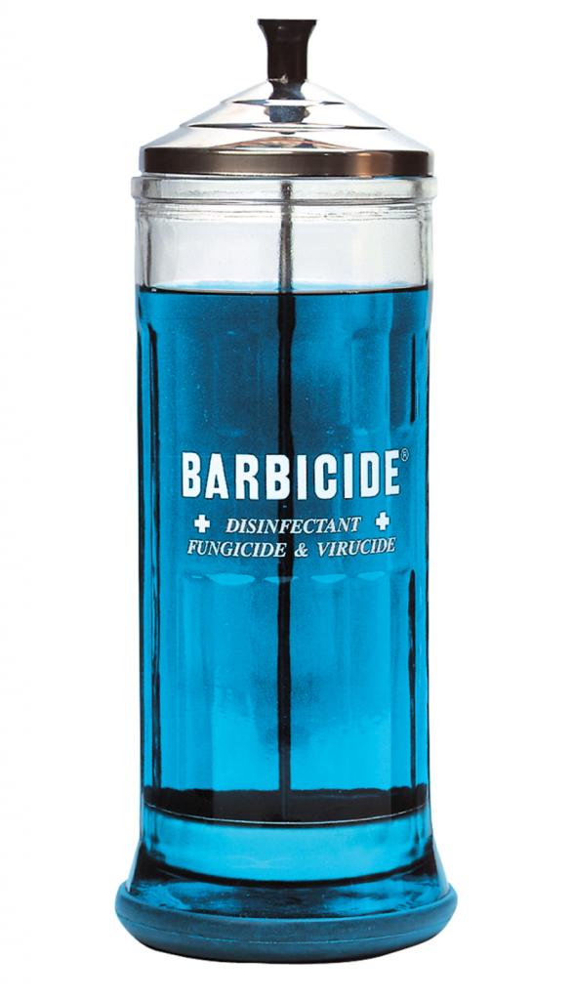

Hello, World.
Author: Matt Morris
🗣
Hello, World.
🗣
A jar of this is going in my kitchen the moment that iPhones are fully waterproof.

🗣
Every day, my wife comes home from work and wipes her phone with bleach. Probably not ideal.
🗣
Just fixed the RSS feed so that entries for link posts use the external URL.
Sears Catalog Homes
I recently learned that Sears once sold mail-order, do-it-yourself kit homes. Just place your order, and soon a railroad car would arrive with all the materials and instructions needed to build your dream home. Many are still standing.
Sears Roebuck promised that “a man of average abilities could assemble a Sears kit home in about 90 days.” No detail was overlooked, as both manual and blueprints instructed homeowner as to the correct spacing of the 750 pounds of nails.
I almost wish I could try one of these just to see if I am a “man of average abilities.”

🗣
I don’t even have to go out of my way to get my step count up anymore. This is just my life now.
{kind=link}
App Store Review Times
🗣
I found a plant in my yard that I am 80% sure is an herb. (Rosemary?) Guess I won’t know for sure until I cook with it…
Tesla Ramps Up Model 3 Production Plans
I’ve said this before, but what I’d really like to see from Tesla is a pickup truck. It seems like the perfect fit. Tesla’s vehicles have lots of torque, which is desirable in a pickup. And just think of all the work trucks used by small businesses that are only driven within a small radius.